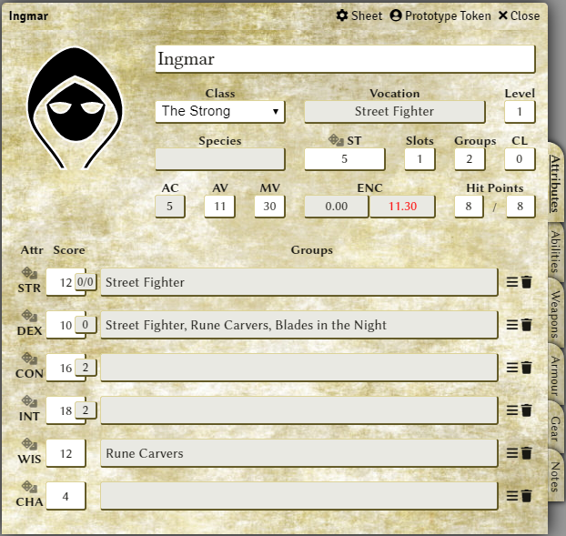
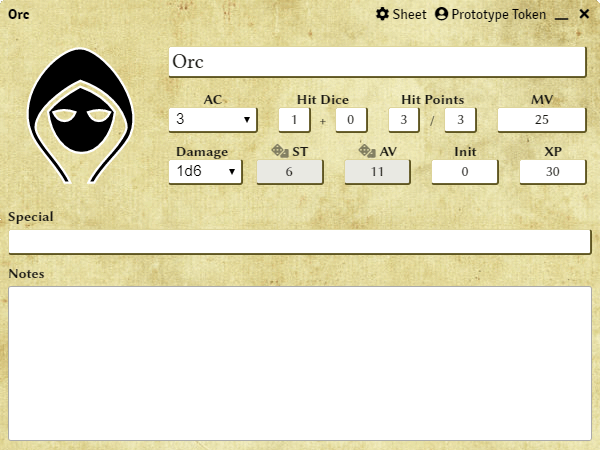

Whitehack Third Edition
An unofficial FoundryVTT system
I've been rather taken with the Whitehack RPG from Christian Mehrstam, in particular the current third edition. You'll need to grab a copy of Whitehack Third Edition to get the best out of this system, there's loads more information about it at the Whitehack website.
While some systems try to mimic the layout of paper/pdf character sheets I realised early on that while this may be more aesthetically pleasing it would not present as usable a character sheet in a VTT, so I went for a design I have found useful in numerous apps - a top 'header' area with the main and most commonly referenced information on the character and a tabs section beneath it which can be used to drill into more detailed areas of the character. I hope you find this works well for you.
Thanks to Christian Mehrstam for giving this FoundryVTT system his approval and of course for producing such a great game in the first place.
Characters, NPCs and Monsters
Character Sheet
Most of this will be self explanatory. Fields that have abbreviations or are a bit more complex will usually have a tooltip with more info if you mouse over them.
- Class: select one of the five classes. This will change the bonuses shown on attributes.
- Vocation and Species: these fields are read only. They will show the first active Vocation/Species added in the Abilities tab.
- Level, Slots, Groups, Attack Value (AV), Movement (MV): standard inputs, enter the relevant value for the chosen class.
- Corruption Level (CL): starts at 0, update manually as needed.
- Saving Throw (ST): enter manually for class. Click on the label (with dice) to make a save (the Saving Throw dialog will pop up).
- Armour Class (AC): read only, calculated for equipped armour. Only the highest piece of equipped armour will contribute towards AC.
- Encumbrance (ENC): read only, calculated from equipped and stored armour, gear and weapons. Show in red when values are above the 10 equipped and 5 stored levels.
Tabs
The vertical labels down the right hand side of the sheet give access to tabs with different information. Most of these tabs present lists of items in tables which all have in common edit and delete icons, so individual items can be updated for the character or removed from the character sheet.
Attributes Tab
Shown above, this should be familiar to most gamers with the standard D&D style attributes. The label (with dice) for each attribute can be clicked to perform and attribute task check.
The score is entered manually, but the modifier boxes are read only and updated based on the scores entered. A tooltip identifies what each is used for.
The final section for each attribute is groups. The text field is read only and is populated from the Select Groups Dialog (accessed by clicking on the three horizontal bars) and cleared with the rubbish bin icon.
The Select Groups dialog allows the player to choose which group or groups to apply to an attribute. It only shows groups which are marked as active.
Abilities Tab
Attunements, Combat Options, Miracles and Groups all go in here. Along with the type of ability, the active column gives an indicator to which is currently active and affects which groups can be assigned to attributes.
Clicking on the icon for the ability will show the ability name and description (if any) in the chat.
Weapons Tab
Stats are shown for each weapon along with whether it is equipped or stored which updates the encumbrance totals appropriately.
Clicking on the icon for the weapon shows the weapon attack dialog which can be used to make a weapon attack. The results of the weapon attack are shown in chat.
Armour Tab
Stats are shown for each piece of armour along with whether it is equipped or stored which updates encumbrance totals and armour class appropriately. While each piece of armour will add to one of the encumbrance totals, only the heaviest piece of armou (the one with the highest AC) will be taken into account in the final AC.
Shields add +1 to AC when equipped. Helmets do not affect the final AC, but have a special affect as described in the Whitehack rules.
Clicking on the icon for armour will show the armour name, AC and description (if any) in the chat.
Gear Tab
Stats are shown for each item of gear along with whether it is equipped or stored which updates encumbrance totals appropriately.
Clicking on the icon for gear will show the gear name and description (if any) in the chat.
Notes Tab
This is a catch all section for languages and whatever notes a player wishes to record about their character.
Dialogs

Besides the Select Groups dialog shown above there are three other dialogs that appear for Saving Throws, Attribute Task Checks and Attacks.
Each accepts a modifier (or To Hit and Damage modifiers for attacks) and the player can click the button for whichever die roll is required:
- D20: standard single D20 roll
- D20 with plus sign: a double positive roll
- D20 with minus sign: a double negative roll
Monster Sheet
Again pretty much self explanatory. Saving Throw (ST) and Attack Value (AV) are read only and generated from the first Hit Dice input, and both can be rolled by clicking on the label (with dice). As with characters, the appropriate dialog will be shown to modify the roll or make a double positive or double negative roll. Initiative can also be rolled if the Monster Sheet is opened from a token.
The rest of the fields can be manually updated.
Items
These
- Ability
- Armour
- Gear
- Weapon
Compendiums
There are compendiums for:
- Armour
- Gear
- Weapons
Which can be dragged directly onto a character or into the items panel.
Encumbrance
I have slightly changed the encumbrance system, based on a regular item taking one slot:
- Heavy (2 slots)
- Regular (1 slot)
- Minor (2 per slot)
- Small (5 per slot)
- Negligible (100 per slot)
- Transport (doesn't use character encumbrance slots)
Rolls
Combat
Initiative
The system supports the FoundryVTT initiative system. After actors have been added to the combat tracker you can roll initiative from there or from the relevant token on a battle map.
Players and GMs can make attribute task checks, saves and attack rolls from actor sheets. Armour Class and Encumbrance are calculated based on Armour, Gear and Weapons (see below). Vocation and Species fields are populated from the Abilities tab and cannot be added directly.